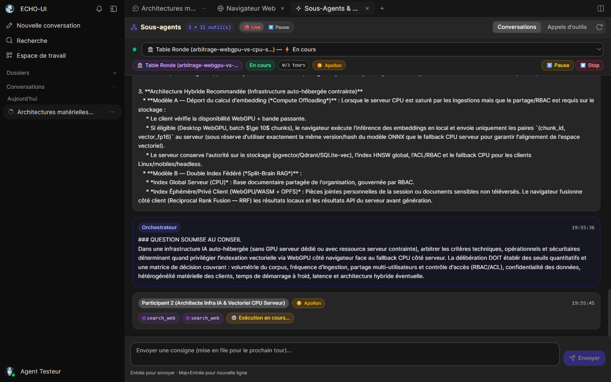
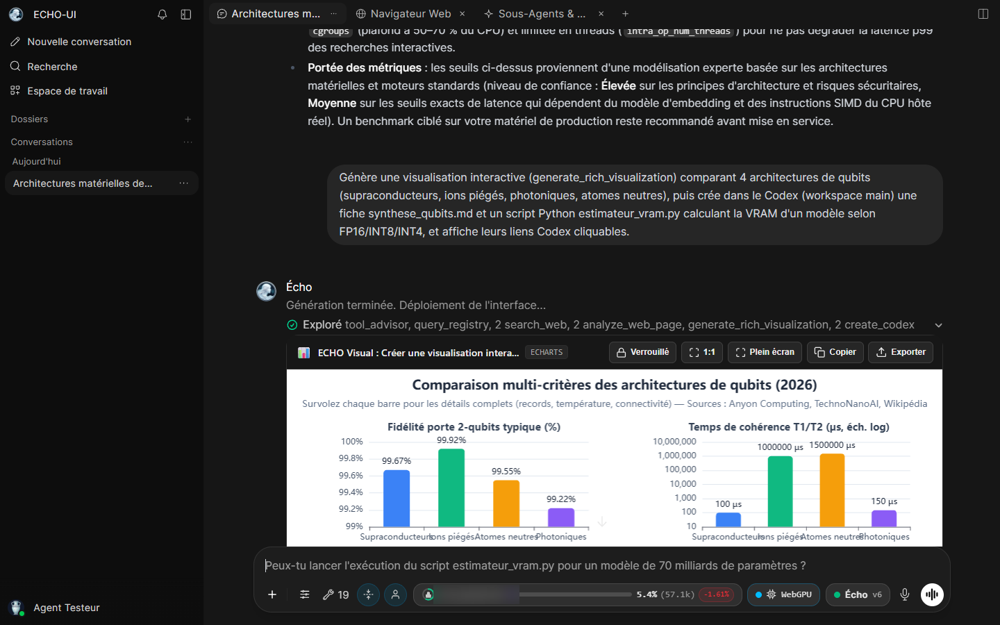

4. Tutoriel Pratique
Ce tutoriel propose un scénario complet, réalisable en une dizaine de minutes, pour observer comment les différents espaces d'ECHO coopèrent sur une même mission : préparer une étude comparative vérifiée sur le web, suivre l'équipe de sous-agents, réviser le rapport dans le Codex et visualiser les résultats dans Applications.
Prérequis et fil rouge du tutoriel
Vous devez disposer d'une session ECHO-UI connectée avec une authentification Google active. Aucune ligne de code n'est à écrire : vous pilotez Écho en langage naturel et observez ses productions dans le panneau latéral.
Phase 1 : Cadrer la Mission avec /plan
Ouvrez une Nouvelle conversation et demandez d'abord un plan structuré afin de garder la maîtrise du périmètre avant le lancement des recherches :
/plan Compare les licences Apache 2.0, MIT et GPL v3 pour un logiciel d'entreprise :
1. Vérifie les clauses officielles récentes sur les sites de référence.
2. Rédige un rapport comparatif structuré dans l'espace main du Codex.
3. Génère un tableau comparatif interactif dans l'onglet Applications.
Ne lance aucune exécution avant ma validation.
Écho passe sur un palier de réflexion adapté, conçoit le plan formel et l'enregistre dans l'espace
plans. Lorsque la carte de validation s'affiche (ou qu'Écho vous demande votre accord), vérifiez les
étapes proposées puis confirmez l'exécution.
Phase 2 : Observer le Navigateur Web en Direct
Dès que le plan est approuvé, Écho confie la consultation des pages de référence au navigateur autonome. L'onglet Navigateur Web s'ouvre en arrière-plan dans le panneau latéral sans interrompre votre saisie.

- Cliquez sur l'onglet Navigateur Web pour observer l'indicateur 🔴 EN DIRECT et le curseur virtuel.
- Utilisez le curseur de la barre temporelle en bas pour revenir sur une capture antérieure (mode ⏸️ DIFFÉRÉ), puis cliquez sur 🔴 Retour au temps réel.
- Activez l'affichage des actions vidéo avec le bouton 🎬 Clips (ou basculez entre 🎬 Voir l'action et 🖼️ Image HD).
- Sur une page contenant un tableau officiel important, cliquez sur 📌 Conserver : le bouton passe à 📌 Conservée, garantissant que cette preuve ne sera pas purgée automatiquement après la session.
Phase 3 : Superviser et Réorienter les Sous-Agents
Pendant la rédaction et la vérification croisée, l'indicateur d'activité en haut à droite signale que des sous-agents travaillent. Ouvrez l'onglet Sous-Agents & Outils.


- Basculez entre la vue Conversations (fil de réflexion et réponses du sous-agent) et Appels d'outils (actions unitaires exécutées).
- Si le flux défile vite, activez la pause d'affichage locale pour lire tranquillement : un compteur indique le nombre de nouvelles étapes arrivées entre-temps.
- Les sous-agents travaillent par tranches bornées (jusqu'à 8 tours d'outils ou 120 secondes par tranche). Vous pouvez à tout moment utiliser Pause, Reprendre (+N tours), Stop ou adresser un message direct via
@nompour ajouter une précision (par exemple : « Ajoute une colonne sur la compatibilité des brevets »).
Phase 4 : Réviser dans le Codex et Ouvrir le Visuel
Une fois l'étude terminée, Écho vous fournit un lien cliquable vers le rapport créé dans le Codex ainsi qu'une vue interactive dans Applications.

estimateur_vram.py ouvert dans l'éditeur CodeMirror 6 colorisé avec la barre d'édition assistée par IA et le sélecteur d'espace.

- Cliquez sur le lien Codex inséré dans la réponse d'Écho (ou ouvrez l'onglet Codex & Fichiers dans l'espace
Main [RW]). - Prévisualisez le rendu Markdown, puis passez en mode Éditeur pour corriger un passage et sauvegardez avec
Ctrl+S. - Testez l'action d'édition assistée par IA pour reformuler un paragraphe en inspectant le diff proposé avant de valider.
- Consultez l'onglet Historique Git pour comparer deux révisions ou restaurer une version antérieure, puis utilisez les boutons Exporter, Copier ou Imprimer.
- Ouvrez enfin l'onglet Applications pour manipuler le tableau comparatif interactif.
Phase 5 : Capitaliser pour Vos Prochaines Sessions
- Ouvrez Espace de travail → Mémoire pour vérifier les préférences éventuellement retenues par Écho et filtrer les Axiomes (Niveau 5).
- Si ce format d'audit vous sert chaque mois, ouvrez le menu
...de la conversation dans la barre latérale et cliquez sur Planifier une automatisation. - Si la conversation continue longtemps et approche la charge de contexte critique, déclenchez Poursuivre dans une nouvelle conversation pour repartir sur un fil allégé tout en conservant le résumé et vos livrables.
Réflexe utile en fin de parcours
Pensez à épingler avec 📌 Conserver toute capture du navigateur que vous souhaitez archiver,
et si vous avez activé un mode spécialisé comme /prof ou /rédacteur en cours de
route, saisissez /persona avant de changer de sujet.
Dossier d'Ingénierie : Chaîne Technique du Fil Rouge
1. Planification & Suivi
build_planetprocess_plan(12-owui-tools/strategic_planner.py) écrivent les fichiers{plan_id}_{slug}.mdettasks_{plan_id}_{slug}.mddansCODEX_WORKSPACE_PLANS(codex/plans/) sous verrouget_codex_lockavec synchronisation danssession.db::echo_resources.
2. Navigateur Live, Clips MP4 & Rétention
delegate_web_browsing(navigation_engine_tool.py) s'exécute viaBrowserToolDispatcheretEchoSubagentController(14-owui-libs/echo_subagent_hub.py), sous sémaphoreECHO_MAX_CONCURRENT_BROWSERS = 2.EchoBrowserTab.svelteconsomme le flux WebSocket binaire/echo/v1/cognition/{chat_id}/browser-ws(header Big-Endian 16 octets + JPEG brut rendu parcreateImageBitmapsur<canvas>) et les clips H.264 MP4 via/clip.- Les captures non épinglées (
status="transient"dansbrowserviews/) sont soumises au délai de grâceBROWSER_TRANSIENT_GRACE_SEC = 1800.0et au plafond FIFO50clips /60 Mo;POST /retainpasse leur statut à"retained".
3. Sous-Agents, Codex & Applications
- Les tranches supervisées (
ECHO_SUBAGENT_CHECKPOINT_TURNS = 8,ECHO_SUBAGENT_CHECKPOINT_TIMEOUT_SEC = 120) sont observées via/echo/v1/cognition/{chat_id}/stream(SSE) et pilotées parPOST /{chat_id}/threads/{sub_sid}/messageet/control. codex_links_filter.py(Priorité 80) valide l'existence physique des fichiers viacheck_codex_file_existset transforme les URNcodex:...en ancres#codex:ouvertes nativement dansEchoCodexTab.svelte(éditeur CodeMirror 6EchoCodexEditor.svelte).- Les vues riches et applications s'affichent dans
EchoCanvasTab.svelte(attributsandboxstrict sansallow-same-origin).